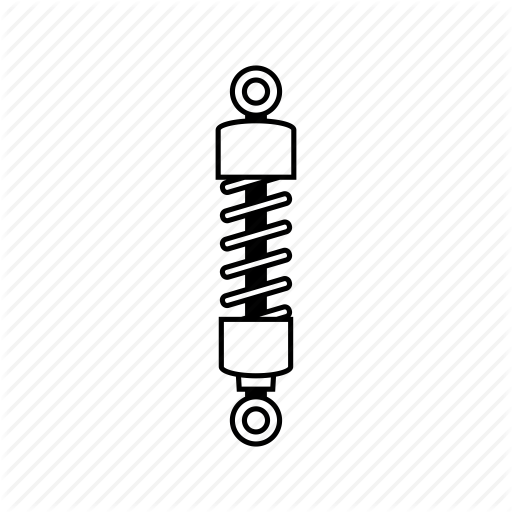

SUSPENSIONS 
For most street riders, the handling of their motorcycle rarely comes into question unless something is worn or broken. In fact, most classics (older than 25 years) were not fitted with the sophisticated fully adjustable suspension that is commonplace on modern bikes today. Road racing and MX machines, on the other hand, have typically had adjustable suspension to maximize the handling and grip of their machines. Correcting any handling problem on a motorcycle is a complex matter, depending on the cause. In the first instance, the mechanic must analyze the problem to determine if it is being caused by one of three things:
1) A worn component
2) A broken or damaged component
3) An adjustable component out of specification
Worn or Broken ComponentsWorn components, such as tires, typically affect the handling of a motorcycle in a progressive, but negative, way. Besides an obvious lack of grip (particularly when wet weather riding), worn tires can also display poor balance and even patter.
Worn fork leg or shock seals will allow the damping oil to escape which is particularly dangerous with the case of the front forks as oil can get onto/into the brakes. A lack of oil in the forks or shocks will give the handling a pogo stick effect and will adversely affect the bike’s cornering ability. Also, as the compression damping will be less effective, the forks will dive more than normal under heavy braking.
Worn fork bushes can also cause stiction in the tubes which can cause patter; this stiction can cause the fork tubes to lock which will remove any suspension characteristics from the forks (no springing or damping).
Broken ComponentsAlmost any component on a motorcycle that breaks can cause a handling problem. The rider must investigate thoroughly if he finds a broken item, not only to repair it, but also to determine why it broke. Adjusting the Suspension Making adjustment to a motorcycle’s suspension should start with setting the bike up to the factory recommended specifications. When all is said and done, the factory will have spent many hours with professional riders fine tuning the motorcycle before offering it to the public. In general, most riders will find the factory settings to be best. However, riders looking to optimize the settings, or looking to correct a handling problem (having ensured there is nothing badly worn or broken), can make some changes to the bike’s handling based on a known issue. There are four main handling issues that appear on a motorcycle due to incorrect adjustment or settings.
• PatterPatter is typically caused by incorrect damper settings on the forks, stiction in the fork bushes, out of round tires, severe out of balance wheel/tire and/or too much air pressure in the forks (where so equipped). Additional causes of patter include too much oil in the forks resulting in less compressible air in the legs, and cavitation of the damping oil.
WeaveWeave is a condition where the motorcycle will not track properly in a straight line. This condition is generally caused by worn tires, but misaligned wheels, loose swing-arm or head stock bearings can also cause this problem. Pogo Stick Effect As the name implies, this is a condition in which the motorcycle bounces up and down like a pogo stick. The root causes are usually under-inflated tires, ineffective rebound damping (often combined with soft springs) and out of round tires.
Harsh RideFeeling every bump, ripple or pothole as a harsh shock back through the handlebars and seat is how old motorcycles without suspension felt to ride. This gives a clue to what can cause this issue on a more modern bike with front and rear suspension. The causes of a harsh ride are over-inflated tires, too much compression damping, stiction in the forks (often experienced on a motorcycle with anti-dive) stiff side walled tires (old tires can have this problem), incorrect quantity or grade of oil in either the front forks or the rear shock/s, and incorrect springs. In an extreme case (typically with a barn find motorcycle) the swing-arm bushes or fork bushes may be sized.
General Handling IssuesThe following general notes should also be considered when looking at cause and effect of handling issues. However, although these items are more applicable to a road race machine, they can affect a street bike too.
• Too much pre-load can cause the suspension to be stiff in the first part of the travel
• Changing the grade of fork or shock oil will affect the compression and rebound damping
• Too much compression damping will make the bike reluctant to steer into a corner
• Stiff fork settings can cause patter under braking prior to corner entry
• Insufficient rebound damping can cause middle corner patter
• Front end shoots up quickly after heavy braking when too little rebound damping is being used
• Too much rebound damping on the forks will cause the forks to stay compressed for a long period giving a nervous corner entry feel
• The rear wheel leaving the ground easily under heavy braking indicates too much rear rebound damping and/or too little front compression damping
• Heavy rear tire wear on superbikes often indicates the rear suspension is too stiff allowing the tire to spin and heat up too much
• Sliding the forks up through the triple clamps will make the bike steer faster but can introduce steering shake (a tank slapper being the worst case scenario).
1. Inner tube, outer tube bend / damage / scratches – Replace
2. Damage oil seal – Replace
3. Rear shock, leaking – Replace